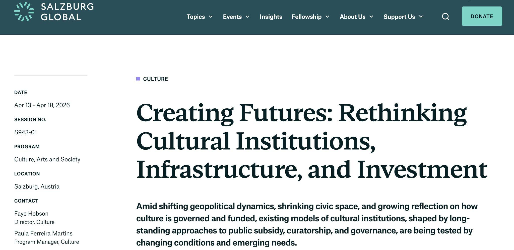
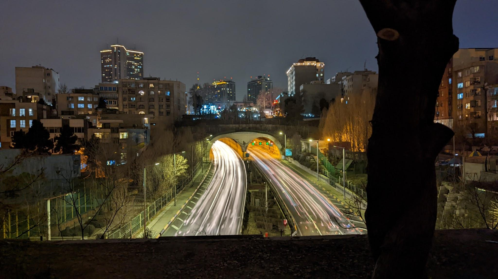
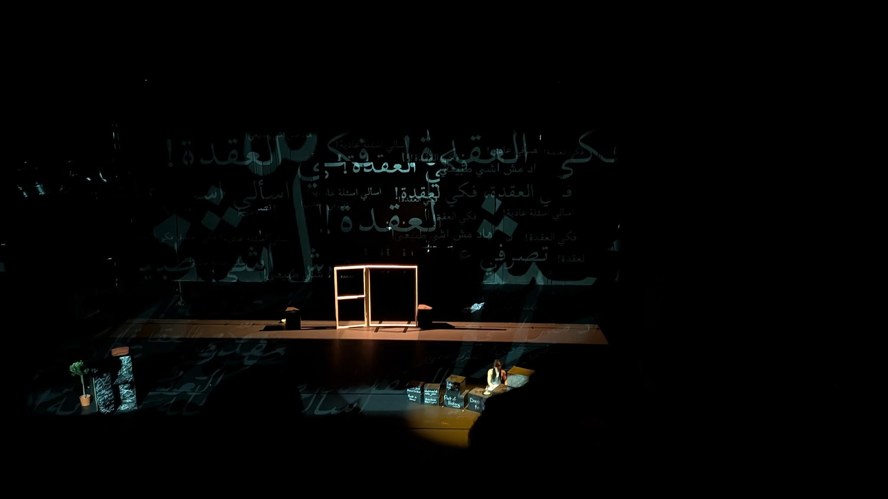
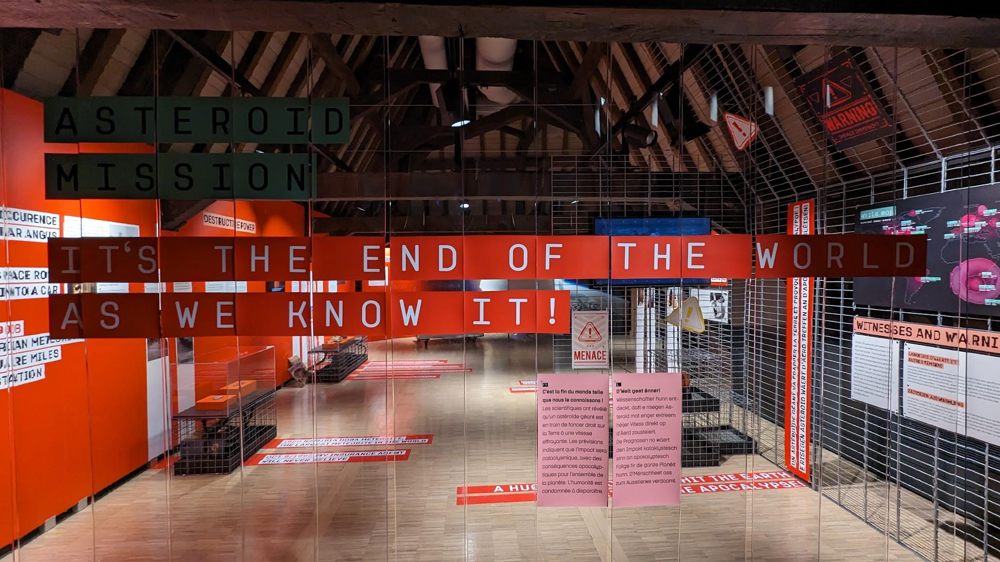
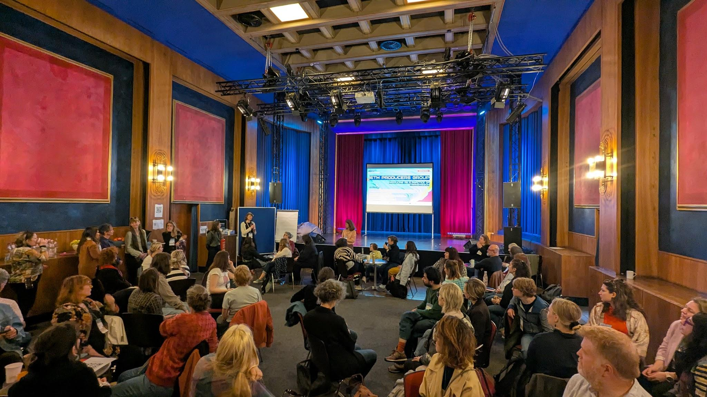
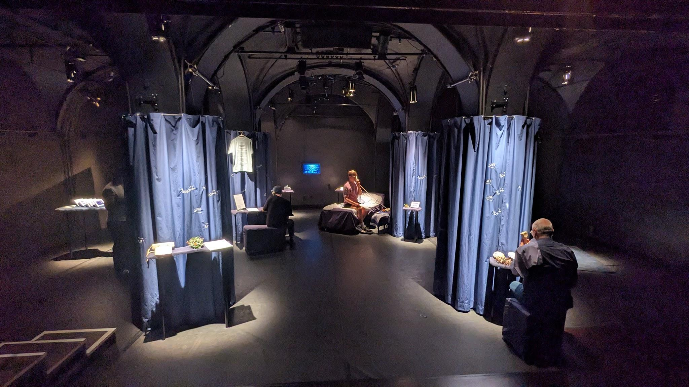

Observations on the temporary architectures of festivals, performing arts, cultural exchange, language, and encounter.

Remember some weeks ago, I wrote that I'm honored to attend the Salzburg Global Seminar session on “Creating Futures: Rethinking Cultural Institutions, Infrastructure, and Investment.”?
Guess what? I won't be going.
One would think that once you move to Europe, things (mobility) become easier than when you were 5000 km away.
Well… not quite.
This is now the 5th time in the past 3.5 years (since I moved to Europe) that I’ve found myself stuck somewhere in Europe, simply because of administrative delays in my residence permit.
Missing several opportunities along the way: serving on a festival jury, joining a panel at HKPAX, visiting a festival to support its dramaturgy, or this. This time, it meant missing the Salzburg Global Seminar.
A space meant to discuss international collaboration, mobility, and the future of cultural ecosystems.
There’s something quite paradoxical about being invited into these conversations… and not being able to arrive physically.
It’s not dramatic. It’s not exceptional. It’s actually very common.
But it does make me think again about how we talk about access.
Because access is not only about audiences, formats, or programming.
It’s also about paperwork, timing, and systems. The usual choreography.
About who is able to move, and who remains on the other side of the border, despite invitations, travel grants, etc.
We often speak about international exchange as if it were fluid. In reality, it’s negotiated. And often, delayed.
Question for reflection?
How do we design international exchange if mobility itself is uneven? (Old but still gold)
Now, as I seem to be grounded in France for the foreseeable future, I’m open to working in different ways, hybrid or remote.
If useful, I’m happy to support with curatorial and programming advice, international strategy, dramaturgy, or thinking through access and audience development programs.
Always happy to connect.

It’s been a while since I last wrote.
Not out of distance, but because too many things were happening at once, personally, politically, emotionally.
Becoming a father at the same time as my country entered a period of war has a way of reorganizing your attention.
Writing didn’t feel urgent.
Or perhaps, everything else did.
Around the same time, Nowruz (Iranian new year) passed, marking a new beginning. Perhaps this is where I begin to return as well.
Now, with a fragile pause in the outside world, and new rhythms settling in at home, a bit of space has reappeared.
Somewhere between these different battle fronts, care, worry, distance, presence, I realised that writing, for me, was never about producing something.
It was a way of locating myself after a big move between countries and contexts…
Of making sense, even partially, of what is happening around me.
And when everything becomes too loud, even that becomes difficult.
So this is not a return to productivity.
It’s a return to attention.
A way to sit again with questions, with fragments, with thoughts that don’t yet fully form.
To write, not because I have clarity, but because I don’t. My headspace is still as cloudy as my beloved and be-missed Brussels.
And perhaps that is where I find myself now,
not fully here, not fully there,
but trying to remain present in both.
Now, perhaps a few questions to reflect on?
What do we do when reality becomes too loud to reflect on it?
When was the last time you stopped, not because you wanted to, but because you had to?
Is writing a form of producing, or a way of locating yourself?
How do we stay present in more than one reality at once?
What does it mean to return, to a practice, to a thought, to yourself?
Who are we when we cannot do the work that defines us?
No need to answer.

I wrote this text over a month ago, but couldn’t bring myself to post it.
Since then, my world has shifted, shaped by what is happening in my home country, Iran.
I’m returning to writing slowly, carrying my work forward while keeping a large part of my heart and mind with my people.
I wrote about this piece years ago on my personal page, closer to its beginning. I'm returning to it now, as I've watched it again during ONDA's International Days in Strasbourg last week - curious not about what has changed in the work, but about what has shifted in me.
Back then I quoted: “We need the sound of our words to delineate the state of our beings.”
I found myself returning to this sentence while watching “Language; no broblem” by Marah, not once, but again, and again.
A multilingual performance that plays with our expectations of understanding. Not by simplifying language, but by stretching it: sounds, accents, mispronunciations, jokes, pauses. Meaning appears, disappears, reforms.
The work doesn’t ask whether language is a neutral tool. It asks what language does to us. Does it offer shelter? Does it mark difference? Does it carry memory, or interrupt it?
What stays with me is how the piece trusts its audience. It doesn’t translate everything. It doesn’t explain every reference. And yet, connection happens.
Because language here is not presented as a fixed system, but as a living practice, something that adapts, bends, absorbs influence, and responds to those who use it. Understanding becomes partial, shared, and negotiated. Sometimes joyful. Sometimes uncomfortable. Always human.
There is humour in this work, and vulnerability, and moments where not getting the joke is part of the experience rather than a failure of it. A reminder that communication is not about perfect alignment, but about staying in the room.
Perhaps this is what language can still do, even when it “fails”: create a space where we recognize each other, not through clarity, but through effort.
And yes , sometimes, it even ends with an omelet.

When Language Falters
Living between languages and places, I often reflect on the true fragility of communication.
A word that doesn't travel,
A sentence that loses its weight somewhere between cultures.
We like to imagine worlds ending dramatically, but Eliot suggests something softer, almost fragile: "not with a bang but a whimper.”
What if that whimper is simply the moment we stop trying to reach out?
When I visit a festival, a question always lingers for me:How do we try to reach out through our festivals?
Through a brochure, a website, a public talk, or a show?
Don’t all of these share something in common?
Perhaps… language(s).
In festival-making, communication is not just a tool; it shapes who feels invited, who understands the work's context, and who remains outside the conversation.
As a curator, I often see how a mistranslation, an unclear frame, a too complex context that isn't explained, or a cultural assumption can transform how a work is received.
Language is usually treated as a tool, but in reality, it is a daily choreography of reaching out, a shared labour of trying, and when that effort collapses, something larger collapses with it.
This is perhaps why this quote by Gene Roddenberry (Yes, the very same Star Trek creator) has stayed with me for years:
"In a very real sense, we are all aliens on a strange planet. We spend most of our lives reaching out and trying to communicate. If in our whole lifetime we truly connect with even a few people, we are fortunate."
Some communities – such as the Deaf communities – often invest far more effort into mutual understanding with the hearing world than the hearing world realises or tries.
The their practice reminds us that communication is not a given, it is built.
Perhaps the “end” begins not in catastrophe, but in the moment we stop making the effort to reach out.
When have you seen someone invest extraordinary effort to make a festival conversation possible?
Photo "Asteroid Mission"
National Museum of Natural History Luxembourg

In April 2023, in Copenhagen, I had the chance to share the space at Udviklingsplatformen for Scenekunst with Yohann Floch (On the Move), delivering what I called an “unconventional keynote” - part game, part personal stories, part reflection.
There was no recording, no script, an ephemeral field.
But the question at its core has stayed with me - and I hope with those who were there:
How do we meet and collaborate on equal terms when hierarchy, bias, and unspoken habits quietly shape the room?
We often speak about accessibility through the visible things: ramps, elevators, sign-language interpretation, and accessible toilets.
But accessibility doesn’t end there.
There is another layer, quieter, less discussed, yet shaping how we meet.
There are quieter forms of access - not more important, not less - just less talked about, and often the ones we overlook when designing events, festivals, or meetings.
It’s in the handwriting we choose in a workshop,where cursive can exclude someone whose first language isn’t written in the Latin script.
It’s in the cashless systems of a city like Copenhagen,where even buying a coffee becomes impossible if your bank card doesn’t work in Europe, or even if you don't have one at all.
It’s in the speed of our communication,the assumption that everyone processes information the same way.
It’s in the hierarchies within a room,deciding who speaks freely and who rehearses their sentence three times before daring to start.
It’s in how we structure participation.
Even as more events offer quiet rooms, access is still shaped by pace, energy, and the unspoken demand to constantly “keep up”.
And don’t get me started on visas.
As producers, curators, facilitators, networkers, artists, we often see these patterns from behind the scenes, the small frictions that shape who participates fully and who only “passes through” a space.
In Copenhagen, someone asked me why these tiny details matter so much.
Because accessibility isn’t only infrastructure.It is attention.It is care expressed in a thousand small decisions.There is a big difference between “you can enter” and ‘mi casa es su casa’ - my home is your home.
So let me ask you, as I often do in my sessions, next time you attend your/a festival, ask yourself:
What forms of access - visible or quiet - shape your experience?
Dear person who’s reading these scattered notes,
The world is a mess.
We are living in a fairy tale, or a scary story. The utopia we keep talking about never existed, and probably never will… unless we learn to navigate this dark fairy tale and find a way through it.
Mid-September 2022, I curated a session called Through the Looking Glass for the European Festivals Association’s 70th anniversary in Yerevan, within Yerevan Perspectives Festival.
It was a week of contrasts, laughter and tears, joy and fear, the heavy shadow of war and the warmth of being together. We listened, we shared stories, and we shaped a small community that stood against fear and embraced care.
The session invited participants to look through a mirror, not just to see others, but to see themselves.
The answers were raw and beautiful, War, Conflict, Dust… but also Culture, History, and Undiscovered stories.
A reminder that regions are not defined by borders, but by the characteristics we project onto them, by what we choose to see and what we don’t.
What do you see when you look through the glass?
And what is it that remains unseen?
Part two
Festivals have never been individual beings; they simply can’t be.
They are made of people, stories, politics, economies, emotions, a living ecosystem of contradictions. Doesn’t that make a festival a society in itself?
So the next exercise I asked the participants engaged them in thinking of their festival or any festival, as a piece of art/literature.
Perhaps a festival is a Caravaggio or an Ai Weiwei.
An Atwood or an Arundhati Roy.
A Bruegel’s Tower of Babel, or Alice’s Wonderland, full of chaos, curiosity, and care.
For me a festival could either be an endeavor to solidarity, while keeping diversity, a kind of Bruegel’s tower of Babel; or “Alice in Wonderland”; A spiritual journey to wisdom, shaping into a new world, multiple perspectives that are simultaneously conflicting, endeavor to find a place there, playing with social norms, the need to be open, and flexible for different pathways, a sudden existence of non-beings and/or beings, a familiar to explore the unfamiliar, engaging new narratives, confronting problems, revolutionizing, having a mad moment, …, and returning to your reality with baggage full of experiences that we carry the rest of our life. This metaphor is not meant to emphasize the word Wonderland and its definition, but rather on much deeper layers of this book, as I mentioned earlier. The book is indeed a fairy tale, but I’d rather call it some scattered notes on Philosophy that have moments of playfulness in it, to be more presentable to us all, despite the age we’re in, aren’t our festivals the same?
In the end in Yerevan, I invited festival makers to sit together and ask:
• How do festivals grow in the middle of crisis and war?
• What is safety, and how does it shape our programming?
• How much politics lives inside our ethos?
• What are we afraid of when we do a festival?
And finally:
What is the conversation we are still not having, that we need and want to have?

Ljubljana, Glej Theatre, Jadran Resort.
I was visiting Ljubljana for a small showcase of Glej Theatre - the oldest independent theatre in Slovenia -. We watched Jadran Resort, a show was a free immersive exploration of the Billionaires's Paradise novel by Peter Antonucci.
It made me think about how territories, societies, and our own internal “worlds” are shaped by forces we rarely see, invisible currents of power, capital, and historical narratives. How do we navigate, inhabit, or resist them?
Some of us were told we would be mere observers while the others took roles on stage. But the experience blurred that line: us as observers, being served wine, accompanied by a personal guide, immersed in a space that combined luxury with the weight of the systems it portrayed. We weren’t doing anything, yet we were participating. Observation became a kind of intimate complicity.
In a far, yet relative way, the work also touched on another aspect of - less talked on - sustainability, of landscapes, societies, and the ways we move through the world. It asked, subtly, how attention and care, or lack of it, shapes both what is temporary and what persists.
It brings some questions to mind
Can observation in performing arts ever be truly neutral, or is it always participation in some way?
In what way can our presence and attention become acts of responsibility in a fleeting ephemeral system?
One observation, one image, one field to contemplate, in a way, a festival, just a different apparatus.